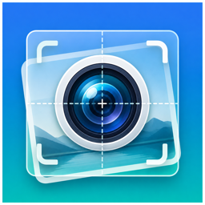

写真 / カメラ
オーバーレイカメラ
ガイド写真を半透明に重ねて、同じ構図で新しい写真を撮影するアプリ。
過去の写真を半透明ガイドとしてカメラに重ね、同じ構図で新しい写真を撮影できます。植物や子どもの成長記録、DIYの進捗記録など、定点観測で変化を残したい場面に。撮影結果にガイド画像は合成されません。
- 過去写真をガイドとして半透明表示
- 同じ構図で新しい写真を撮影
- 撮影後は元画像と並べて比較
- ガイド名・タグで記録を整理
 Lillip Apps
← アプリ一覧に戻る
Lillip Apps
← アプリ一覧に戻る

写真 / カメラ
ガイド写真を半透明に重ねて、同じ構図で新しい写真を撮影するアプリ。
過去の写真を半透明ガイドとしてカメラに重ね、同じ構図で新しい写真を撮影できます。植物や子どもの成長記録、DIYの進捗記録など、定点観測で変化を残したい場面に。撮影結果にガイド画像は合成されません。